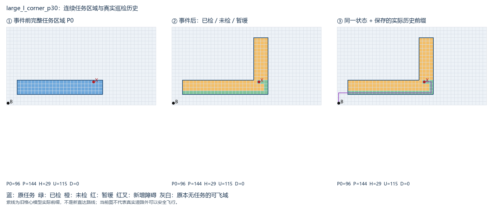
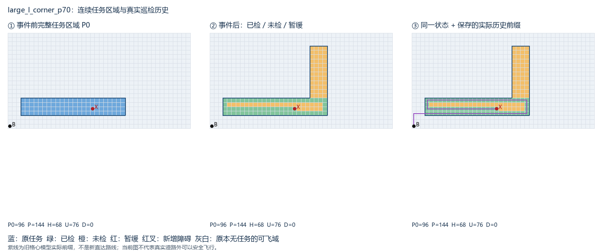
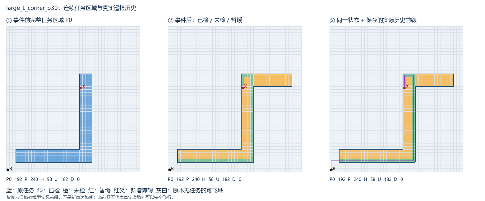
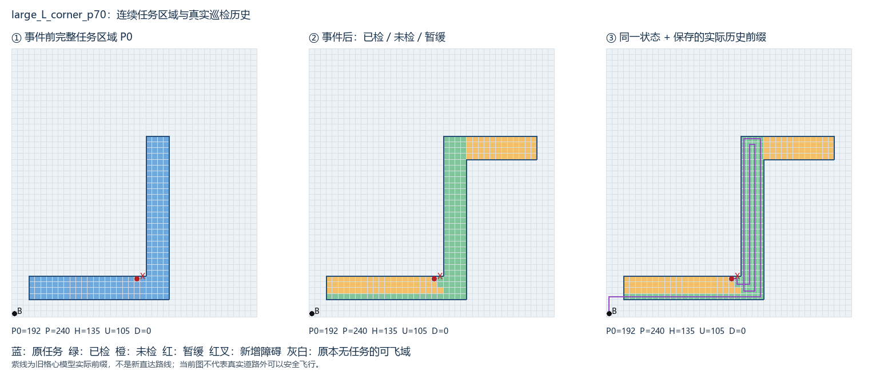
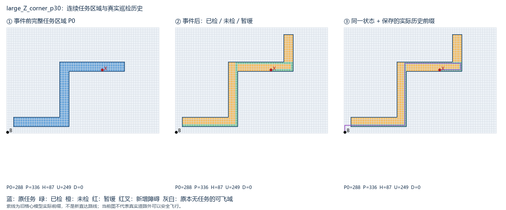
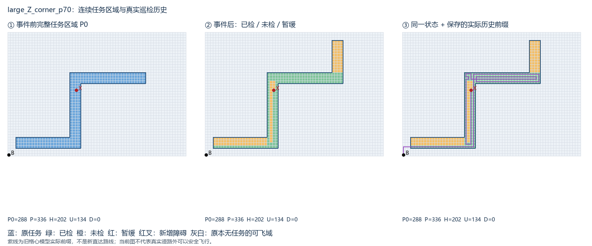
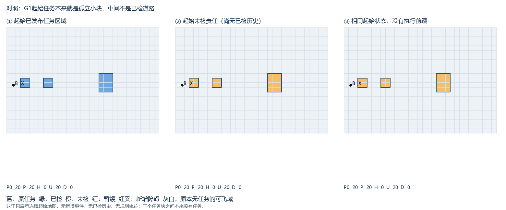

保存输入，不生成新轨迹。

保存输入，不生成新轨迹。

保存输入，不生成新轨迹。

保存输入，不生成新轨迹。

保存输入，不生成新轨迹。

保存输入，不生成新轨迹。

任务20格、可飞域759格，三个分离任务块；空白原本没有采集责任。
| 状态 | 事件 | P0分量 | P分量 | U分量 | U大小 | 历史 |
|---|---|---|---|---|---|---|
| large_I_corner_p30 | corner | 1 | 1 | 1 | [115] | 旧格心前缀已核 |
| large_I_corner_p70 | corner | 1 | 1 | 2 | [48, 28] | 旧格心前缀已核 |
| large_I_obstacle_p30 | obstacle | 1 | 1 | 1 | [63] | 旧格心前缀已核 |
| large_I_obstacle_p70 | obstacle | 1 | 1 | 1 | [28] | 旧格心前缀已核 |
| large_I_straight_p30 | straight | 1 | 1 | 2 | [67, 48] | 旧格心前缀已核 |
| large_I_straight_p70 | straight | 1 | 1 | 2 | [48, 28] | 旧格心前缀已核 |
| large_L_corner_p30 | corner | 1 | 1 | 2 | [134, 48] | 旧格心前缀已核 |
| large_L_corner_p70 | corner | 1 | 1 | 2 | [57, 48] | 旧格心前缀已核 |
| large_L_obstacle_p30 | obstacle | 1 | 1 | 1 | [130] | 旧格心前缀已核 |
| large_L_obstacle_p70 | obstacle | 1 | 1 | 1 | [53] | 旧格心前缀已核 |
| large_L_straight_p30 | straight | 1 | 1 | 2 | [134, 48] | 旧格心前缀已核 |
| large_L_straight_p70 | straight | 1 | 1 | 2 | [57, 48] | 旧格心前缀已核 |
| large_Z_corner_p30 | corner | 1 | 1 | 3 | [141, 60, 48] | 旧格心前缀已核 |
| large_Z_corner_p70 | corner | 1 | 1 | 3 | [60, 48, 26] | 旧格心前缀已核 |
| large_Z_obstacle_p30 | obstacle | 1 | 1 | 2 | [137, 60] | 旧格心前缀已核 |
| large_Z_obstacle_p70 | obstacle | 1 | 1 | 2 | [56, 26] | 旧格心前缀已核 |
| large_Z_straight_p30 | straight | 1 | 1 | 3 | [141, 60, 48] | 旧格心前缀已核 |
| large_Z_straight_p70 | straight | 1 | 1 | 3 | [60, 48, 26] | 旧格心前缀已核 |
| medium_I_corner_p30 | corner | 1 | 1 | 1 | [43] | 旧格心前缀已核 |
| medium_I_corner_p70 | corner | 1 | 1 | 2 | [18, 10] | 旧格心前缀已核 |
| medium_I_obstacle_p30 | obstacle | 1 | 1 | 1 | [25] | 旧格心前缀已核 |
| medium_I_obstacle_p70 | obstacle | 1 | 1 | 1 | [10] | 旧格心前缀已核 |
| medium_I_straight_p30 | straight | 1 | 1 | 1 | [43] | 旧格心前缀已核 |
| medium_I_straight_p70 | straight | 1 | 1 | 2 | [18, 10] | 旧格心前缀已核 |
| medium_L_corner_p30 | corner | 1 | 1 | 1 | [68] | 旧格心前缀已核 |
| medium_L_corner_p70 | corner | 1 | 1 | 2 | [21, 18] | 旧格心前缀已核 |
| medium_L_obstacle_p30 | obstacle | 1 | 1 | 1 | [50] | 旧格心前缀已核 |
| medium_L_obstacle_p70 | obstacle | 1 | 1 | 1 | [21] | 旧格心前缀已核 |
| medium_L_straight_p30 | straight | 1 | 1 | 1 | [68] | 旧格心前缀已核 |
| medium_L_straight_p70 | straight | 1 | 1 | 2 | [21, 18] | 旧格心前缀已核 |
| medium_Z_corner_p30 | corner | 1 | 1 | 2 | [47, 46] | 旧格心前缀已核 |
| medium_Z_corner_p70 | corner | 1 | 1 | 2 | [32, 18] | 旧格心前缀已核 |
| medium_Z_obstacle_p30 | obstacle | 1 | 1 | 2 | [46, 29] | 旧格心前缀已核 |
| medium_Z_obstacle_p70 | obstacle | 1 | 1 | 1 | [32] | 旧格心前缀已核 |
| medium_Z_straight_p30 | straight | 1 | 1 | 2 | [47, 46] | 旧格心前缀已核 |
| medium_Z_straight_p70 | straight | 1 | 1 | 2 | [32, 18] | 旧格心前缀已核 |
| small_I_corner_p30 | corner | 1 | 1 | 1 | [14] | 旧格心前缀已核 |
| small_I_corner_p70 | corner | 1 | 1 | 2 | [6, 3] | 旧格心前缀已核 |
| small_I_obstacle_p30 | obstacle | 1 | 1 | 2 | [4, 3] | 旧格心前缀已核 |
| small_I_obstacle_p70 | obstacle | 1 | 1 | 1 | [3] | 旧格心前缀已核 |
| small_I_straight_p30 | straight | 1 | 1 | 1 | [14] | 旧格心前缀已核 |
| small_I_straight_p70 | straight | 1 | 1 | 2 | [6, 3] | 旧格心前缀已核 |
| small_L_corner_p30 | corner | 1 | 1 | 1 | [22] | 旧格心前缀已核 |
| small_L_corner_p70 | corner | 1 | 1 | 2 | [7, 6] | 旧格心前缀已核 |
| small_L_obstacle_p30 | obstacle | 1 | 1 | 1 | [16] | 旧格心前缀已核 |
| small_L_obstacle_p70 | obstacle | 1 | 1 | 1 | [7] | 旧格心前缀已核 |
| small_L_straight_p30 | straight | 1 | 1 | 1 | [22] | 旧格心前缀已核 |
| small_L_straight_p70 | straight | 1 | 1 | 2 | [7, 6] | 旧格心前缀已核 |
| small_Z_corner_p30 | corner | 1 | 1 | 1 | [31] | 旧格心前缀已核 |
| small_Z_corner_p70 | corner | 1 | 1 | 3 | [9, 6, 1] | 旧格心前缀已核 |
| small_Z_obstacle_p30 | obstacle | 1 | 1 | 1 | [25] | 旧格心前缀已核 |
| small_Z_obstacle_p70 | obstacle | 1 | 1 | 2 | [9, 1] | 旧格心前缀已核 |
| small_Z_straight_p30 | straight | 1 | 1 | 1 | [31] | 旧格心前缀已核 |
| small_Z_straight_p70 | straight | 1 | 1 | 3 | [9, 6, 1] | 旧格心前缀已核 |